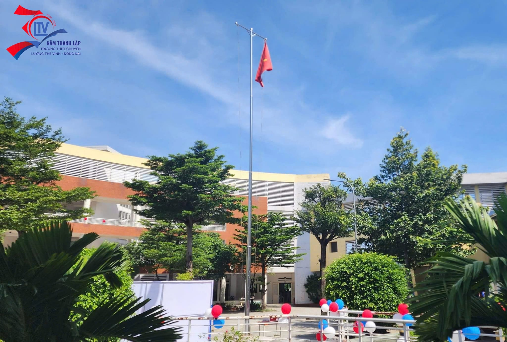
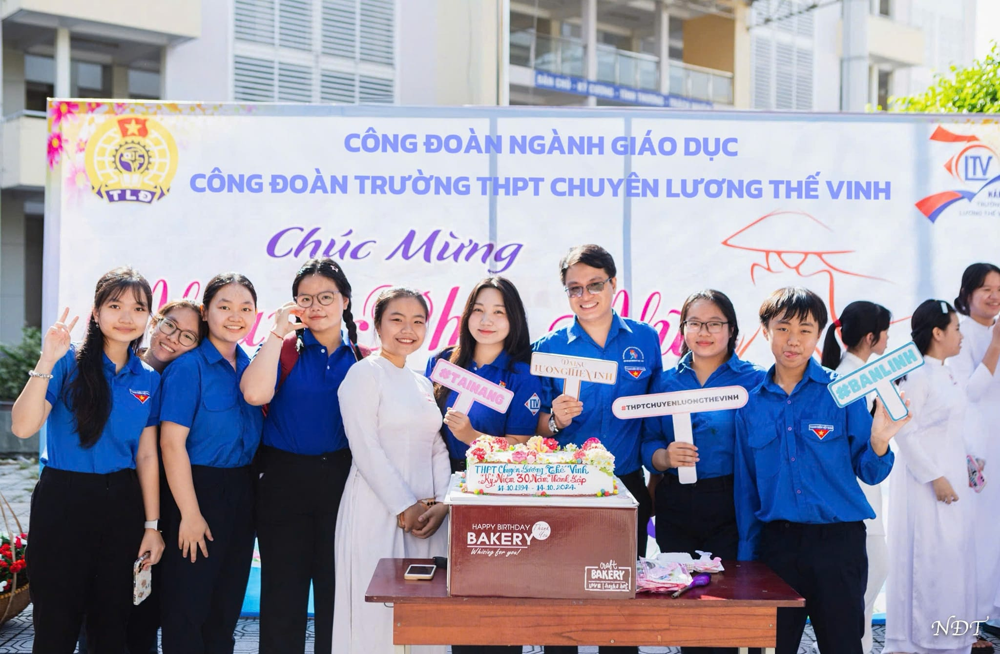
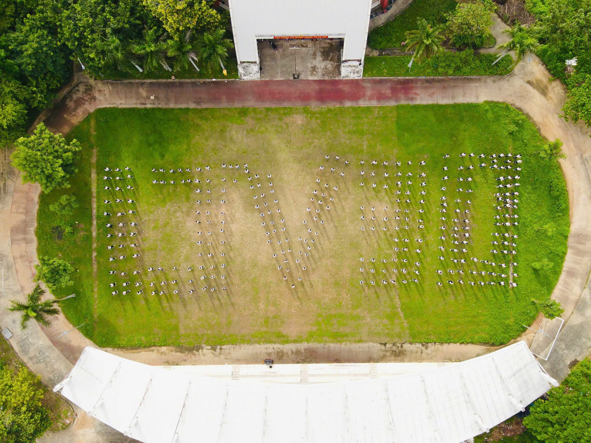

Nuôi Dưỡng Trí Tuệ,
Khơi Nguồn Sáng
Tạo &
Tự Hào 30 Năm Truyền Thống
Kế thừa nền móng các lớp chuyên từ năm học 1982–1983 và chính thức thành lập năm 1994, nhà trường là trung tâm giáo dục năng khiếu chất lượng cao, nơi ươm mầm các thế hệ học sinh tài năng của tỉnh Đồng Nai.

Ba Thập Kỷ Khẳng Định Vị Thế Giáo Dục Mũi Nhọn
Được thành lập ngày 14/10/1994 theo Quyết định số 2527/QĐ-UBT của UBND tỉnh Đồng Nai, Trường THPT Chuyên Lương Thế Vinh mang tên nhà toán học, danh nhân văn hóa lỗi lạc của dân tộc — Trạng Lường Lương Thế Vinh.
Qua hơn 30 năm phát triển, từ những ngày đầu đặt nền móng với cơ sở vật chất mượn tạm, thầy và trò nhà trường đã không ngừng nỗ lực xây dựng truyền thống hiếu học, tinh thần đoàn kết, tư duy độc lập và khát vọng chinh phục những đỉnh cao tri thức.
"Kết hợp kiến thức vững chắc, năng lực tư duy sáng tạo với nhân cách trong sáng và trách nhiệm phụng sự quê hương, đất nước."

Ý Nghĩa Biểu Trưng Logo
Hình thành từ năm 1999 gắn với ý tưởng của Nhà giáo Nhân dân Trần Anh Dũng và thầy Nguyễn Đức Hiệp: biểu tượng tròn vuông hòa hợp thể hiện sự trọn vẹn, màu xanh tượng trưng cho niềm tin và tri thức, màu đỏ đại diện cho tình yêu thương và trách nhiệm.
Những Con Số Ghi Dấu Nỗ Lực
Dữ liệu thành tích và quy mô đào tạo được xác thực theo các báo cáo tổng kết chính thức
Những Dấu Mốc Lịch Sử Đáng Tự Hào
Từ lớp chuyên Toán tiền thân năm 1982 đến vị thế trường chuyên chất lượng cao của tỉnh Đồng Nai ngày nay
-
1982–1983
Hình thành lớp chuyên Toán tiền thân
Lớp chuyên Toán thí điểm đầu tiên được thành lập tại Trường THPT Ngô Quyền với khoảng 18 học sinh, đặt nền móng ban đầu cho sự nghiệp phát hiện và đào tạo học sinh năng khiếu tại Đồng Nai.
-
1990
Mở rộng quy mô 4 lớp chuyên
Sở GD&ĐT Đồng Nai cho phép mở rộng đào tạo 4 khối chuyên: Văn, Toán, Lý và Anh văn với khoảng 60 học sinh, khẳng định nhu cầu cấp thiết về một môi trường chuyên biệt.
-
14/10/1994
Chính thức thành lập trường
UBND tỉnh Đồng Nai ban hành Quyết định số 2527/QĐ-UBT thành lập Trường PTTH Chuyên Lương Thế Vinh. Thầy Trần Anh Dũng được bổ nhiệm làm Hiệu trưởng đầu tiên.
-
1997–1998
Khánh thành & chuyển về cơ sở riêng 2,7 ha
Lễ khai giảng năm học 1997–1998 đồng thời là lễ khánh thành cơ sở mới tại phường Tân Hiệp. Nhà trường mở rộng đào tạo 7 chuyên ngành: Văn, Toán, Lý, Hóa, Sinh, Anh và Tin.
-
11/2024
Kỷ niệm 30 năm thành lập trường (1994–2024)
Mốc son tròn ba thập kỷ khẳng định uy tín, chất lượng đào tạo và sự tiếp nối tự hào của các thế hệ cán bộ giáo viên, cựu học sinh và học sinh nhà trường.
Khẳng Định Vị Thế Giáo Dục Mũi Nhọn & Nghiên Cứu Sáng Tạo
Những kết quả xuất sắc ghi nhận tâm huyết bồi dưỡng của thầy cô và khát vọng chinh phục tri thức của các thế hệ học sinh
Cuộc Thi Khoa Học Kỹ Thuật Cấp Quốc Gia (Năm Học 2025–2026)
Dự Án Thiết Kế AcuIRpen
Giải pháp sáng tạo ứng dụng công nghệ của học sinh nhà trường, được ban giám khảo đánh giá cao về tính thực tiễn và năng lực nghiên cứu độc lập.
Dự Án Bloomind
Đề tài nghiên cứu khoa học giàu tính nhân văn và công nghệ, khẳng định đam mê tìm tòi và bản lĩnh của học sinh chuyên Lương Thế Vinh tại đấu trường quốc gia.
Học Sinh Giỏi Quốc Gia
Đội tuyển học sinh nhà trường đạt 31 giải tại kỳ thi chọn Học sinh giỏi Quốc gia THPT, gồm 8 giải Nhì, 9 giải Ba và 14 giải Khuyến khích; giữ vai trò nòng cốt cho chất lượng mũi nhọn của tỉnh Đồng Nai.
Học Sinh Giỏi Cấp Tỉnh Bảng A
Tại kỳ thi HSG cấp tỉnh lớp 12 (bảng A dành cho hệ chuyên), học sinh nhà trường xuất sắc giành 442 giải thưởng: 17 giải Nhất, 58 giải Nhì, 155 giải Ba và 212 giải Khuyến khích.
Đấu Trường Khu Vực & Olympic
Đoàn học sinh nhà trường đạt Giải Nhất toàn đoàn tại Trại hè Phương Nam lần thứ IX năm 2026; cùng bề dày truyền thống nhiều năm nằm trong nhóm 5 đơn vị dẫn đầu kỳ thi Olympic truyền thống 30/4 phía Nam.
Môi Trường Năng Động, Sáng Tạo & Phát Triển Toàn Diện
Bên cạnh học tập chuyên sâu, học sinh được tạo điều kiện tối đa để rèn luyện kỹ năng, thể chất, bồi đắp tâm hồn và phát huy năng khiếu qua phong trào ngoại khóa

Hệ Sinh Thái Hơn 14 Câu Lạc Bộ
Mạng lưới CLB phong phú trong các lĩnh vực ngoại ngữ (ICIS, LTV English Speaking Club), tranh biện & tư duy phản biện (ISDC), âm nhạc & nghệ thuật (LTV Orpheus, Lumination) cùng các hoạt động thiện nguyện giàu ý nghĩa (Sẻ Chia Yêu Thương).

Rèn Luyện Thể Chất & Tinh Thần Đồng Đội
Các giải thi đấu bóng đá học sinh thường niên, Hội khỏe Phù Đổng và hoạt động rèn luyện thể thao trên sân bãi khang trang, giúp học sinh nâng cao thể lực, rèn giũa bản lĩnh và tình đoàn kết gắn bó.

Sự Kiện Truyền Thống & Không Gian Mở
Khuôn viên xanh và sân trường rộng mở là nơi diễn ra các ngày hội truyền thống giàu bản sắc: Lễ kỷ niệm 30 năm thành lập trường (11/2024), Hội Xuân đón Tết với các gian hàng văn hóa dân gian và Đêm văn nghệ 'Lương Thế Vinh tôi yêu'.